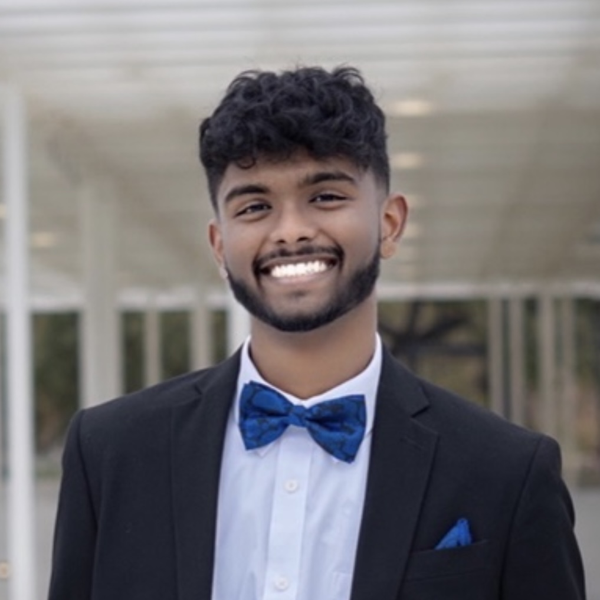

Personal Life
Hi, my name is Sathya Balakumar. Click on my photo to go to my linkedin page or click on my name to visit my instagram photography page!

Here's some information about my personal life.
I am currently a final-year Electrical and Computer Engineering Student at the University of Texas at Austin. I enjoy learning about Software Engineering and Machine Learning!
But it all started when I was born in the bay area (GO WARRIORS!) in 2001. I moved to Plano, Texas when I was 5 and lived in Plano for 4 years.
Then I moved to India to live with my grandparents for 4 years til I was 13. I then moved back to Frisco, Texas where I went to Fowler Middle School then Frisco Liberty High School and graduated in 2019.
Afterwards, I began attending the University of Texas at Austin.